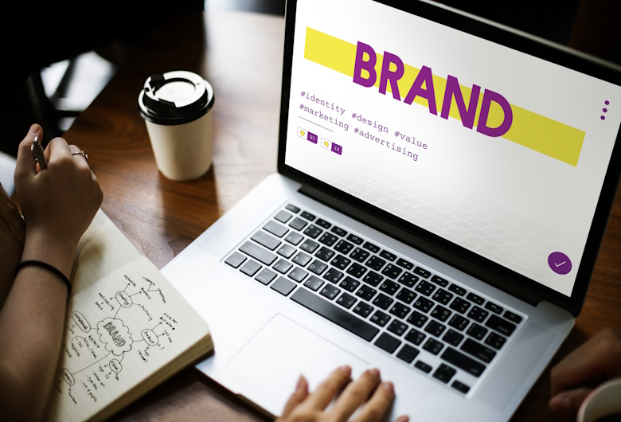

Bisnis membutuhkan tampilan visual dan strategi branding yang mampu menarik perhatian audiens secara efektif. Agensi desain memiliki tim kreatif yang mampu membantu bisnis membangun identitas visual yang tepat sasaran. Dengan pengalaman dan strategi yang matang, agensi dapat menciptakan desain yang tidak hanya menarik, tetapi juga efektif untuk meningkatkan citra brand. Langkah-langkahnya:
Menentukan identitas dan tujuan brand merupakan langkah awal yang penting dalam membangun sebuah bisnis. Sebelum membuat desain, bisnis perlu memahami visi, misi, serta target pasar yang ingin dicapai agar brand memiliki arah dan karakter yang jelas. Dengan identitas yang tepat, konsep visual yang dibuat akan lebih sesuai dengan kebutuhan bisnis dan audiens. Logo menjadi elemen utama yang mewakili sebuah brand sehingga desainnya harus unik, sederhana, dan mudah diingat. Selain berfungsi sebagai identitas visual, logo juga harus mampu mencerminkan karakter dan nilai dari bisnis agar lebih mudah dikenali oleh konsumen. Pemilihan warna dan tipografi juga memiliki peran besar dalam membangun citra brand. Warna dapat memberikan kesan emosional tertentu kepada audiens, sedangkan tipografi membantu menciptakan tampilan yang profesional dan konsisten. Penggunaan warna dan font yang tepat akan memperkuat identitas visual sebuah brand. Di era digital, media sosial menjadi salah satu sarana branding yang sangat penting. Penggunaan visual yang menarik dan konsisten dapat membantu meningkatkan interaksi dengan audiens serta memperluas jangkauan pasar. Konten yang kreatif juga membuat brand terlihat lebih aktif dan profesional. Konsistensi brand pada seluruh media promosi sangat diperlukan agar bisnis terlihat lebih terpercaya. Penggunaan desain yang seragam pada website, media sosial, kemasan produk, hingga kartu nama akan membantu memperkuat identitas brand dan membuatnya lebih mudah diingat oleh konsumen.